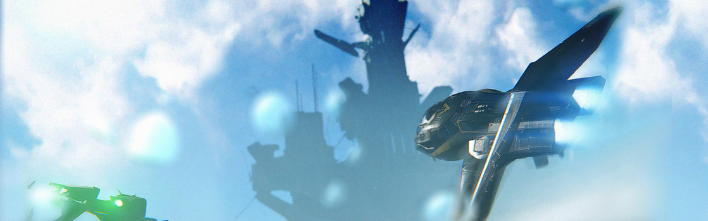

SYSTEM: NEMO

Excurs - System: Nemo
Nemo System „Ergo, I Got Blubbered.“ T-Shirts mit diesem Spruch tauchten plötzlich im ganzen Empire auf. Jeder wusste, dass er sich auf den Weltraum-Wal bezog, eine Touristenfalle im Nemo System. Doch nur diejenigen, welche die Attraktion bereits besucht haben, kennen die Wahrheit: Es als Weltraum-Wal zu beschreiben, ist eine Übertreibung.
Wahr ist, dass es einen länglichen Asteroiden mit einem dicken Ende gibt, das sich zu einem kleineren zuspitzt, und der Ergo (Nemo III) umkreist. Es gibt sogar Einheimische, die sich stundenlang über die enorme Ähnlichkeit zu einem Wal von der Erde streiten können. Der wahre Hauptmagnet scheinen jedoch die Shops und Attraktionen zu sein, die leichtgläubige Touristen anlocken sollen. Alle Galactic-Guide-Mitarbeiter, die zu diesem famosen Wahrzeichen gereist sind, kehrten zurück und sagten praktisch alle dasselbe: „Ergo, ich wurde reingelegt.“
Auch wenn der Weltraum-Wal seinem Ruf vielleicht nicht gerecht wird, passt er irgendwie doch zum Nemo System. Von Ergo, einem Ozeanplaneten mit reichlich Rohölvorkommen, aber keinem natürlichen Leben, bis hin zum Namen des Systems, den die meisten als Referenz auf Wassertiere verstehen. Auch wenn es tatsächlich ein Akronym für Norman, Ellis, Mau und Ochoa ist, den Nachnamen der Gründungspartner von NemoCo – die Firma, der die Entdeckung des Systems zugeschrieben wird. Anders gesagt: Das Nemo-System ist ein Ort, an dem die Dinge nicht immer das sind, was sie zu sein scheinen.
Selbst das Entdeckungsdatum des Systems wirft Fragen auf. Offizielle Aufzeichnungen schreiben Daeho Ochoa, damals noch ein Partner von NemoCo, die Entdeckung des Systems im Jahr 2364 zu. Aber einige glauben, dass er das System bereits 2362 erstmals besuchte – eine Diskrepanz, die auf Firmenintrigen während der unkontrollierten Terraforming-Anfänge der Menschheit zurückzuführen ist. Die Kontroverse konzentrierte sich auf Ochoa, der 2362 noch beim Sicherheitsdienst für den Tadamor-Terraforming-Konzern im Fora-System arbeitete. Eines Tages verloren Kollegen während einer Routinepatrouille den Kontakt zu Ochoa. Als ein Suchtrupp mobilisiert wurde, tauchte Ochoa wieder auf und reichte auf der Stelle seine Kündigung ein – ohne einen Grund anzugeben oder seine Flugroute des letzten Tages zu protokollieren. Dieses letzte Detail wurde von der Leitung von Tadmor übersehen, die damals mit den Problemen beim verpfuschten Terraforming von Fora III überfordert waren. Genau das, was Ochoa an diesem Tag gemacht hatte, führte schließlich zu einem Gerichtsverfahren, im Laufe dessen die Frage nach Nemos Entdeckungsdatum aufkam. Im Jahre 2364 kaufte das aufkeimende Unternehmen NemoCo dem Tadmor-Konzern alle Fora-basierten Terraformingplattformen mit einem gepfefferten Rabatt ab. Tadmor brauchte verzweifelt Credits, um rechtliche Probleme in Angriff nehmen zu können und schloss deshalb in dem Glauben, sie müssten sonst die Kosten für die Zerlegung der gewaltigen Plattformen tragen, damit sie durch den Sprungpunkt passten, einen Handel mit NemoCo ab. Doch kurz nach dem Kauf gab NemoCo die Entdeckung eines frei zugänglichen Sprungpunktes von Fora in ein komplett neues System bekannt, welches sie umgehend Nemo tauften. Die NemoCo-Manager bezeichneten es als einen unglaublichen Glücksfall. Für Tadmor war dieser Zufall zu groß, als dass sie ihn hätten ignorieren können. Besonders als sie hörten, wer das neue System entdeckt hatte. Dae-ho Ochoas Entdeckung von Nemo ließ Tadmor tiefer in seiner Personalakte graben, was zu einer erneuten Prüfung seines plötzlichen und seltsamen Ausscheidens aus der Firma führte. Schlussendlich reichte Tadmor eine Klage gegen NemoCo ein, in der sie behaupteten, Ochoa hätte den Sprungpunkt nach Nemo an dem Tag gefunden, an dem er kündigte. Aus diesem Grund hätten sie Anspruch auf einen Teil von NemoCos Operationen. Ungeachtet einiger nebensächlicher Beweise war das Einzige, das Tamdor wirklich brauchte, Ochoas Navigationscomputer. Ochoa hatte seine alte Aurora jedoch verkauft und keine Ahnung, wo sie sich befand. Tadmors Ermittler suchten das gesamte bekannte Universum ab, konnte sie aber nicht finden. Aufgrund mangelnder Beweise für ihre Anschuldigungen wurde Tadmors Klage abgewiesen, woraufhin das Unternehmen aufgelöst wurde. Die Geschichte des Nemo Systems ist also abgesehen vom Namen des Systems auf mehrere Weisen mit NemoCo verflochten. Sogar der Wechsel des Systems vom Öllieferanten hin zu einem Urlaubsziel geht auf NemoCo zurück. Sie waren die Ersten, die den Weltraum-Wal im Universum vermarkteten und Ergos angestaubte Bohrinseln in Touristenziele verwandelten – jedoch mit so hohen Kosten, dass die Firma schließlich in den Ruin getrieben wurde. Jedoch legten sie den Grundstein für zukünftige Unternehmer. Trotz ihres unglaublichen Glücks mit Nemo litt die Firma unter einer fehlgeleiteten Führung und versäumte es, in anderen Wirtschaftssektoren im Empire Fuß zu fassen, wodurch die Firma langsam in der Versenkung verschwand. Auch wenn es NemoCo nicht mehr gibt, floriert ihr namensverwandtes System weiter. So ähnlich wie beim Weltraum-Wal ist es auch bei dem System: Auch wenn es nicht genau das ist, was es zu sein scheint, sind die Menschen dennoch von ihm fasziniert.

„An dem fraglichen Tag war Mr. Ochoa beauftragt, den Bereich zu patrouillieren, in dem jetzt der Fora-Nemo Sprungpunkt zu finden ist. In Anlehnung an sein mysteriöses und noch immer unerklärtes Verschwinden hat Ochoas erster Kontakt mit Mitgliedern des Suchtrupps, welche verzweifelt versuchten ihn zu finden, nur 75.000 Kilometer vom Sprungpunkt entfernt stattgefunden.“ – Lynn Ahmed, Oberster Rechtsbeistand des Tadmor Terraforming Konzerns, 236
Wahr ist, dass es einen länglichen Asteroiden mit einem dicken Ende gibt, das sich zu einem kleineren zuspitzt, und der Ergo (Nemo III) umkreist. Es gibt sogar Einheimische, die sich stundenlang über die enorme Ähnlichkeit zu einem Wal von der Erde streiten können. Der wahre Hauptmagnet scheinen jedoch die Shops und Attraktionen zu sein, die leichtgläubige Touristen anlocken sollen. Alle Galactic-Guide-Mitarbeiter, die zu diesem famosen Wahrzeichen gereist sind, kehrten zurück und sagten praktisch alle dasselbe: „Ergo, ich wurde reingelegt.“
Auch wenn der Weltraum-Wal seinem Ruf vielleicht nicht gerecht wird, passt er irgendwie doch zum Nemo System. Von Ergo, einem Ozeanplaneten mit reichlich Rohölvorkommen, aber keinem natürlichen Leben, bis hin zum Namen des Systems, den die meisten als Referenz auf Wassertiere verstehen. Auch wenn es tatsächlich ein Akronym für Norman, Ellis, Mau und Ochoa ist, den Nachnamen der Gründungspartner von NemoCo – die Firma, der die Entdeckung des Systems zugeschrieben wird. Anders gesagt: Das Nemo-System ist ein Ort, an dem die Dinge nicht immer das sind, was sie zu sein scheinen.
Selbst das Entdeckungsdatum des Systems wirft Fragen auf. Offizielle Aufzeichnungen schreiben Daeho Ochoa, damals noch ein Partner von NemoCo, die Entdeckung des Systems im Jahr 2364 zu. Aber einige glauben, dass er das System bereits 2362 erstmals besuchte – eine Diskrepanz, die auf Firmenintrigen während der unkontrollierten Terraforming-Anfänge der Menschheit zurückzuführen ist. Die Kontroverse konzentrierte sich auf Ochoa, der 2362 noch beim Sicherheitsdienst für den Tadamor-Terraforming-Konzern im Fora-System arbeitete. Eines Tages verloren Kollegen während einer Routinepatrouille den Kontakt zu Ochoa. Als ein Suchtrupp mobilisiert wurde, tauchte Ochoa wieder auf und reichte auf der Stelle seine Kündigung ein – ohne einen Grund anzugeben oder seine Flugroute des letzten Tages zu protokollieren. Dieses letzte Detail wurde von der Leitung von Tadmor übersehen, die damals mit den Problemen beim verpfuschten Terraforming von Fora III überfordert waren. Genau das, was Ochoa an diesem Tag gemacht hatte, führte schließlich zu einem Gerichtsverfahren, im Laufe dessen die Frage nach Nemos Entdeckungsdatum aufkam. Im Jahre 2364 kaufte das aufkeimende Unternehmen NemoCo dem Tadmor-Konzern alle Fora-basierten Terraformingplattformen mit einem gepfefferten Rabatt ab. Tadmor brauchte verzweifelt Credits, um rechtliche Probleme in Angriff nehmen zu können und schloss deshalb in dem Glauben, sie müssten sonst die Kosten für die Zerlegung der gewaltigen Plattformen tragen, damit sie durch den Sprungpunkt passten, einen Handel mit NemoCo ab. Doch kurz nach dem Kauf gab NemoCo die Entdeckung eines frei zugänglichen Sprungpunktes von Fora in ein komplett neues System bekannt, welches sie umgehend Nemo tauften. Die NemoCo-Manager bezeichneten es als einen unglaublichen Glücksfall. Für Tadmor war dieser Zufall zu groß, als dass sie ihn hätten ignorieren können. Besonders als sie hörten, wer das neue System entdeckt hatte. Dae-ho Ochoas Entdeckung von Nemo ließ Tadmor tiefer in seiner Personalakte graben, was zu einer erneuten Prüfung seines plötzlichen und seltsamen Ausscheidens aus der Firma führte. Schlussendlich reichte Tadmor eine Klage gegen NemoCo ein, in der sie behaupteten, Ochoa hätte den Sprungpunkt nach Nemo an dem Tag gefunden, an dem er kündigte. Aus diesem Grund hätten sie Anspruch auf einen Teil von NemoCos Operationen. Ungeachtet einiger nebensächlicher Beweise war das Einzige, das Tamdor wirklich brauchte, Ochoas Navigationscomputer. Ochoa hatte seine alte Aurora jedoch verkauft und keine Ahnung, wo sie sich befand. Tadmors Ermittler suchten das gesamte bekannte Universum ab, konnte sie aber nicht finden. Aufgrund mangelnder Beweise für ihre Anschuldigungen wurde Tadmors Klage abgewiesen, woraufhin das Unternehmen aufgelöst wurde. Die Geschichte des Nemo Systems ist also abgesehen vom Namen des Systems auf mehrere Weisen mit NemoCo verflochten. Sogar der Wechsel des Systems vom Öllieferanten hin zu einem Urlaubsziel geht auf NemoCo zurück. Sie waren die Ersten, die den Weltraum-Wal im Universum vermarkteten und Ergos angestaubte Bohrinseln in Touristenziele verwandelten – jedoch mit so hohen Kosten, dass die Firma schließlich in den Ruin getrieben wurde. Jedoch legten sie den Grundstein für zukünftige Unternehmer. Trotz ihres unglaublichen Glücks mit Nemo litt die Firma unter einer fehlgeleiteten Führung und versäumte es, in anderen Wirtschaftssektoren im Empire Fuß zu fassen, wodurch die Firma langsam in der Versenkung verschwand. Auch wenn es NemoCo nicht mehr gibt, floriert ihr namensverwandtes System weiter. So ähnlich wie beim Weltraum-Wal ist es auch bei dem System: Auch wenn es nicht genau das ist, was es zu sein scheint, sind die Menschen dennoch von ihm fasziniert.
Nemo I
Der engste Nachbar des Klasse F Hauptreihensterns ist Nemo I. Heute ist er als Protoplanet ohne Ressourcen bekannt. Doch dank MicroProbes dachten die Erzsucher einst, er hätte Bergbaupotential. MicroProbe stellte sich selbst als die nächste Generation der Resourcenentdeckungs-Technologie dar, doch die anfänglich reichhaltigen Scans von Nemo I stellten sich bei einer erneuten Prüfung als erschreckend ungenau heraus. Glücklicherweise war MicroProbes wertlose Technologie entlarvt, bevor die Erzsucher ihre Zeit damit verschwendeten, das Ödland von Nemo I umzugraben. Nemo II Jahrtausende über haben Meteoriteneinschlägen die Oberfläche von Nemo II zerklüftet. Neben der Schaffung dieser optisch dynamischen Fläche haben die Meteore dem Planeten auch edle Erz- und Mineralienvorkommen beschert. Inzwischen haben zahlreiche Bergbauunternehmen Anspruch auf Nemo II erhoben, um diese wertvollen Ressourcen zu suchen.Nemo III (Ergo)
Nemo III ist eine terraformte Ozeanwelt, durch die das gesamte System für das Empire relevant geblieben ist. NemoCo richtete sich ziemlich schnell auf Ergo ein, als Scans gewaltige Ölreserven unter dem Ozean entdeckten. Sobald das Terraforming abgeschlossen war, wurden große Ölbohrplattformen errichtet, um die Ressourcen unter dem Wasser zu gewinnen. Für viele dieser Bohrinseln wurden Teile der ausrangierten Terraforming-Plattformen verwendet. Nachdem das Öl erschöpft war, wurden diese Bohrinseln in dauerhaft bewohnbare Plattformen mit Einkaufsmöglichkeiten, Restaurants und verschiedenen Dienstleistungen für Bürger umgewandelt, um die große Anzahl Arbeiter unterzubringen, die nach Ablauf ihres Vertrags gerne weiter auf dem Planeten leben wollten. Im späten 27. Jahrhundert zeigte eine Studie unter der Leitung der Universität von Mentor, dass die Bewohner von Ergo durchschnittlich länger lebten als Bewohner anderer Welten und sie häufiger die Wörter „friedlich“ und „ruhig“ nutzen, um den Planeten zu beschreiben. Diese allgemeine Wahrnehmung Nemos idyllischer und erholsamer Lebensweise verbreitete sich im gesamten Empire und führte zu einer boomenden Tourismusindustrie. Über die Jahrhunderte haben ehrgeizige Bauunternehmer Luxusplattformen gebaut, die speziell auf Touristen ausgelegt sind. Doch das größte Mysterium bleibt, wie diese Unmengen an Öl überhaupt unter den Ozean von Ergo gelangt sind. Als die Menschen auf Ergo ankamen, gab es dort kein natürliches Leben und Forscher suchen noch immer nach fossilen Beweisen, dass dort jemals Leben existierte. Nach wie vor ist unbekannt, was genau passiert ist. Die am weitesten verbreitete Erklärung lautet, dass vor Jahrtausenden alles natürliche Leben durch ein Massenaussterben ausgemerzt wurde. Diesen unbekannten und lange vergangenen organischen Spezies haben wir die Ölreserven auf Ergo zu verdanken. Bis heute existiert die Fehlwahrnehmung, dass es in Ergos Ozeanen Leben gibt. Sie wird wahrscheinlich durch die Assoziation mit dem Weltraum-Wal noch verstärkt. Eigentlich gibt sich Ergos Werbeindustrie für Tourismus große Mühe, diese Vorstellung aufzulösen. Touristen werden sogar explizit darauf hingewiesen, für ihren Urlaub keine Angelausrüstung mitzubringen und es wird stark hervorgehoben, wie sicher das Schwimmen im Wasser ist, da es dort nichts gibt, was die Schwimmer fressen würde.
Reisewarnung
Vergesst nicht, Eure Sonnencreme mitzunehmen! Selbst kalte, wolkenverhangene Tage können aufgrund der zahlreichen Reflexionen der Sonnenstrahlen auf dem Wasser einen Tribut von Eurer Haut fordern. Flüstern im WindEin Flüstern im Wind
„Ich kann es nicht genau erklären, aber etwas an dem Meer, das sich in alle Himmelsrichtungen bis zum Horizont erstreckt, beruhigte mich. Als mein Arbeitsvertrag auf der Bohrinsel auslief, sagte ich meiner Chefin, dass ich bleiben wollte. Ganz gleich, ob sie mir die Position als Floorhand gegeben hätte. Ich hätte jeden Job genommen, den sie hatte. Natürlich habe ich ihr das nicht gesagt.“ – Nicht identifizierter männlicher Proband, Die Psychologie von Ergos Anziehungskraft„An dem fraglichen Tag war Mr. Ochoa beauftragt, den Bereich zu patrouillieren, in dem jetzt der Fora-Nemo Sprungpunkt zu finden ist. In Anlehnung an sein mysteriöses und noch immer unerklärtes Verschwinden hat Ochoas erster Kontakt mit Mitgliedern des Suchtrupps, welche verzweifelt versuchten ihn zu finden, nur 75.000 Kilometer vom Sprungpunkt entfernt stattgefunden.“ – Lynn Ahmed, Oberster Rechtsbeistand des Tadmor Terraforming Konzerns, 236